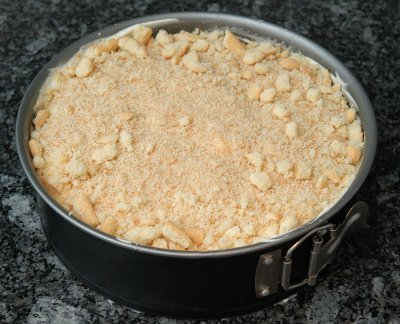

| Zutaten: | |
| 180 g | Löffelbiskuits |
| 70 g | Butter |
| Zitronengötterspeise | |
| 2 dl | Wasser |
| 12 g | Zucker |
| 1 Beutel | Vanillezucker |
| 0.5 l | Schlagrahm |
| 200g | Frischkäse |
| 2 El | Zitronensaft |
Alle Löffelbiskuits verkrümeln.
Boden:
Springform mit Backpapier auskleiden.
120g Löffel Biskuit erst mit zerlassener Butter mischen und in die Springform drücken.
Füllung:
1 x Zitronengötterspeise mit 2 dl kaltem Wasser vermischen und 10 Minuten quellen lassen oder aufkochen und abkühlen lassen (lauwarm)
200g Frischkäse und 12g Zucker sowie 1 Packung Vanillezucker und 2 El. Zitronensaft zur lauwarmen Götterspeise rühren.
Quellen lassen im Kühlschrank.
Danach 5dl gut geschlagene Sahne unterheben und in die Form geben (Ring vorher herum machen).
Oben nochmals 60g zerkrümelte Löffelbiskuits darauf geben.
Jens Kötz July.1999
Am 26.12.1999 zubereitet. (RE)
War am 30.5.2010 Ok aber nicht umwerfend. Es ist ein cremiger, nicht gebackener Cheesecake mit einem Zitronenaroma. Mit dem vielen Schlagrahm schmeckt er etwas luftig aber auch mastig. RE